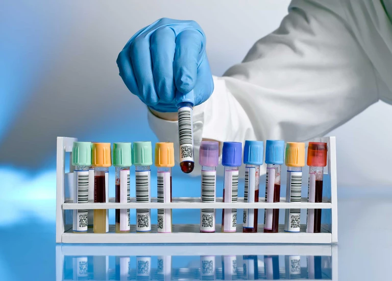

<div class="flex flex-col place-content-center place-items-center min-h-screen">
    <p class="text-lg font-bold uppercase text-gray-800 text-left mb-8">Rédaction de bilans</p>
    <div class="flex flex-col md:flex-row place-content-center place-items-center gap-28 ">
        <div class="flex flex-col place-items-center place-content-center ">
            
            <button class="border-x-2 border-b-2 p-4 w-80 hover:bg-[#D9D9D9] hover:cursor-pointer" (click)="redigerbilanradio()"> Rédiger un bilan biologique</button>
        </div>

        <div class="flex flex-col place-items-center place-content-center">
            
            <button class="border-x-2 border-b-2 p-4 w-80 hover:bg-[#D9D9D9] hover:cursor-pointer" (click)="redigerbilanbio()"> Rédiger un bilan radiologique</button>
        </div>
    </div>
    <button (click)="redigeresume()"  class=" bg-[#1890FF] text-white px-8 py-2 m-8 rounded font-semibold place-content-center place-items-center hover:bg-[#1075D2]">Terminer en rédigant le résumé de la consultation</button>
</div>
